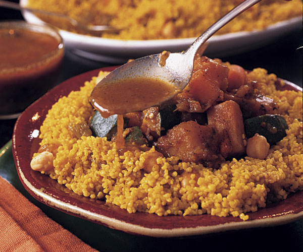

This is a first prototype of our implementation of the famous Beer Game (renamed "Couscous" game in honor of our world-famous national dish!)
The original Beer Game was created in the 1960s by a group of professors at MIT's Sloan School of Management. The game has been used since then in a variety of forms as an experiential learning tool in introductory Supply Chain and Operations Management courses, as well as Management Information Systems ones. The game greatly helps in the explanation and illustration of fundamental supply chain concepts, most notably the so-called "Bullwhip Effect" in supply chains.
Click on the dish below to start the game! We hope you enjoy your meal :)
© 2019 Jawad Abrache. All rights reserved.